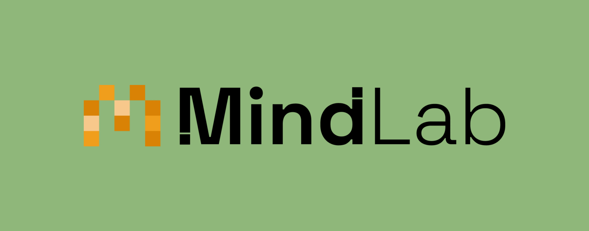
Na primeira edição do HackLabs Especializações, recebemos o desafio: como podemos identificar as habilidades e competências mais demandadas pelo mercado de trabalho, permitindo que instituições de ensino e programas de treinamento adaptem seus currículos às necessidades do mercado?
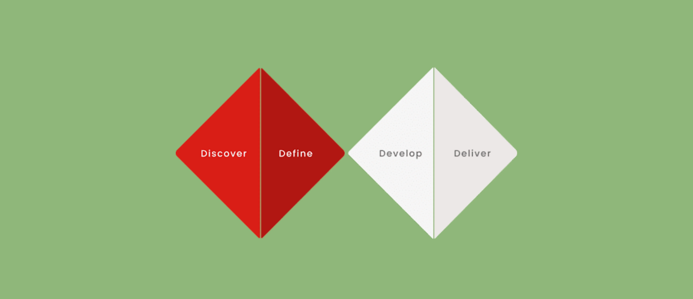
#1 Pesquisa
Para iniciar nosso projeto, fizemos algumas pesquisas para entender melhor a problemática em questão e definir a direção da nossa futura solução, visto que se tratava de um problema que afetava três usuários (alunos, instituições de ensino e empresas) e precisaríamos de um foco. Após a pesquisa desk, percebemos que poderíamos seguir
com foco na instituições de ensino, porém utilizando os alunos como fonte para extrair insights dos possíveis gaps destas instituições. Abaixo, estão imagens relacionadas à nossa pesquisa desk, seguidas de imagens do formulário que lançamos para o público em geral, pessoas que já passaram pelo ensino médio e hoje enfrentam - ou não - desafios relacionados à falta de habilidades e competências específicas no mercado de trabalho.
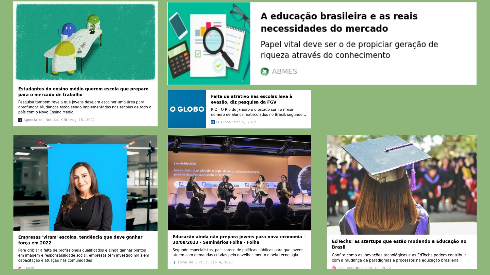
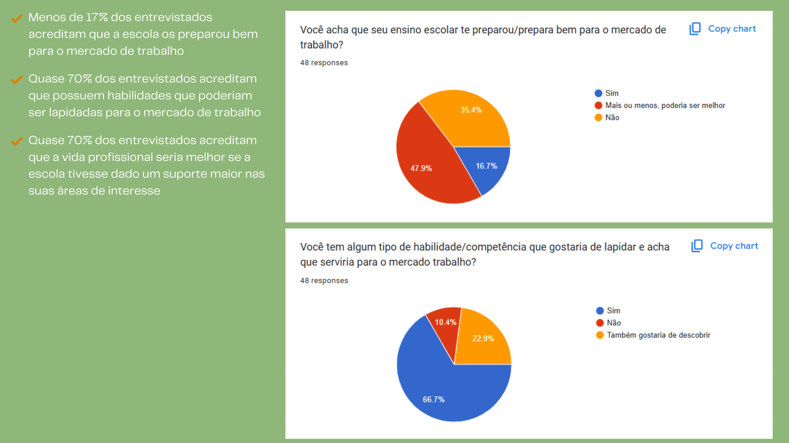
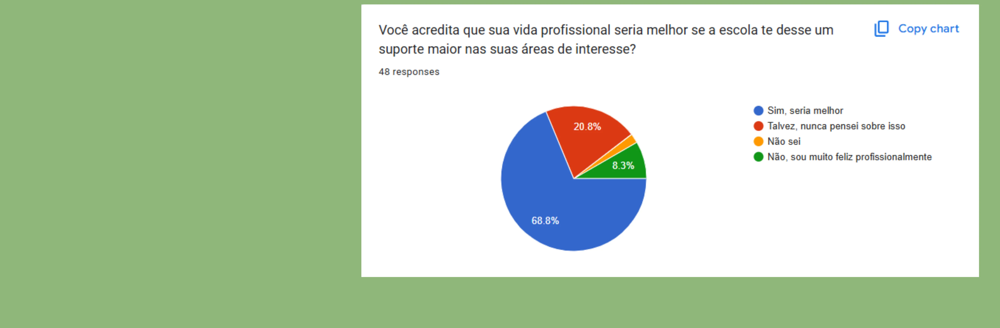
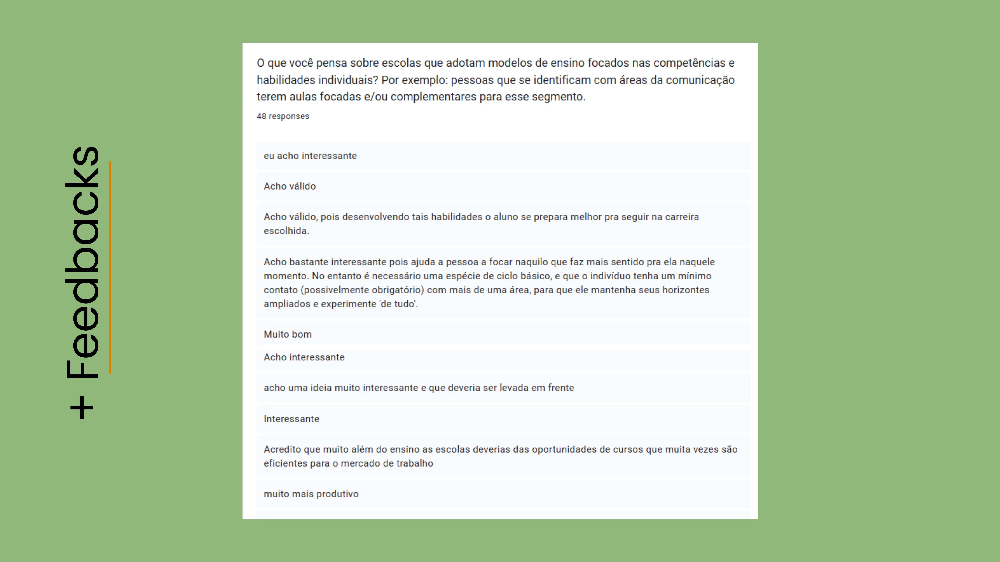
#2 Ideação
Analisando toda a problemática, dores dos usuários e objetivos, fizemos algumas dinâmicas, como Crazy 8, e chegamos ao MindLab, um design de serviço que transforma a forma como escolas e empresas se conectam para preparar estudantes para o mercado de trabalho. Através de uma plataforma digital, professores registram as habilidades individuais de seus alunos, acompanham seu desenvolvimento e agendam visitas guiadas a empresas parceiras de nichos diversos.
Através dessas parcerias estratégicas entre escolas e empresas, os docentes podem indicar estudantes com perfis alinhados às oportunidades de trabalho nos níveis trainee, menor aprendiz e estágio. Antes de iniciar esse processo, os professores recebem mentorias especializadas para aprimorar seu olhar sobre as competências individuais dos alunos, para garantir que conseguirão fazer esse acompanhamento de forma mais precisa e eficaz.
Com essa abordagem integrada, a solução cria um ecossistema colaborativo entre educação e mercado de trabalho, oferecendo aos estudantes uma jornada mais estruturada para o desenvolvimento de suas carreiras.
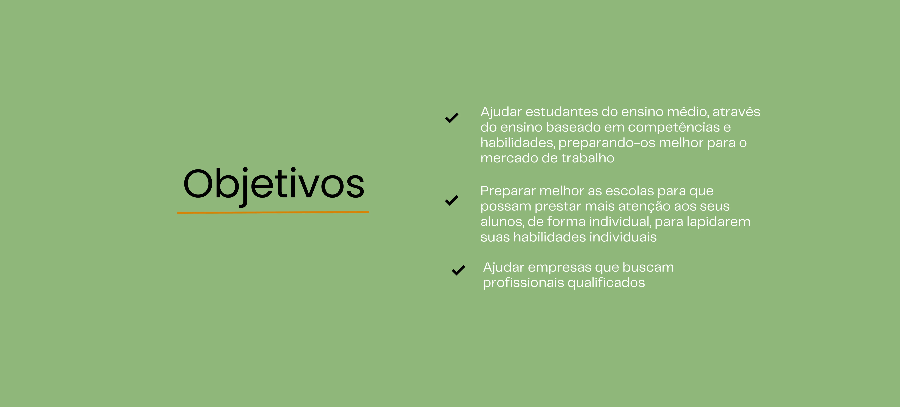
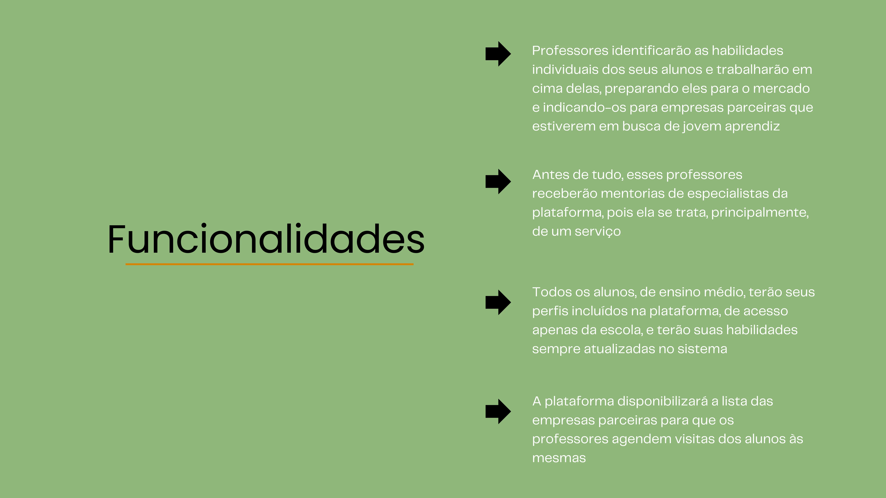
#3 Prototipação
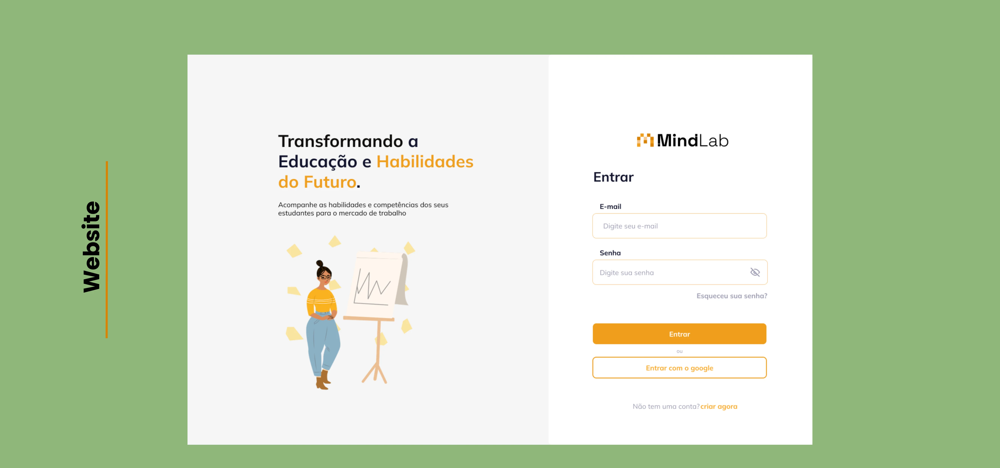
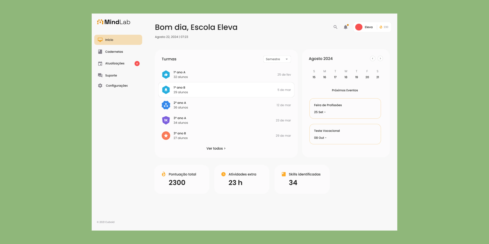
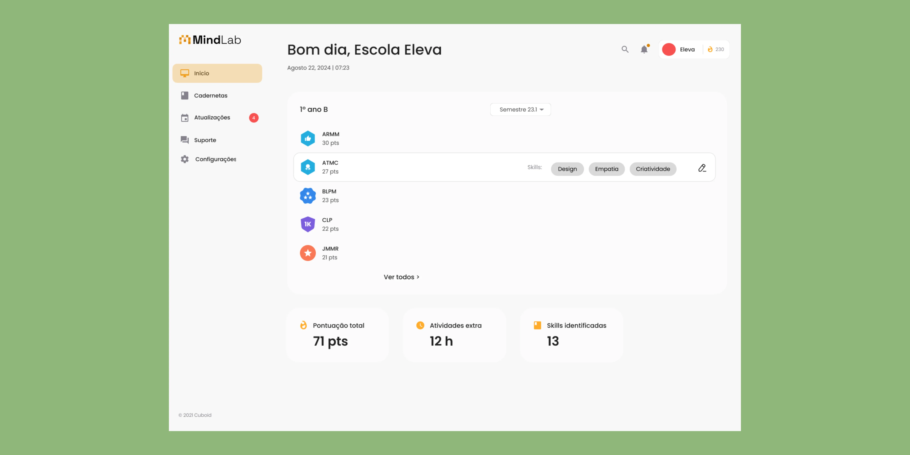
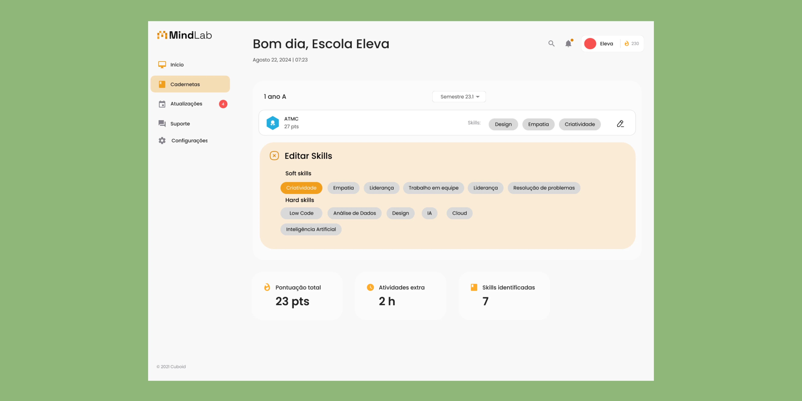
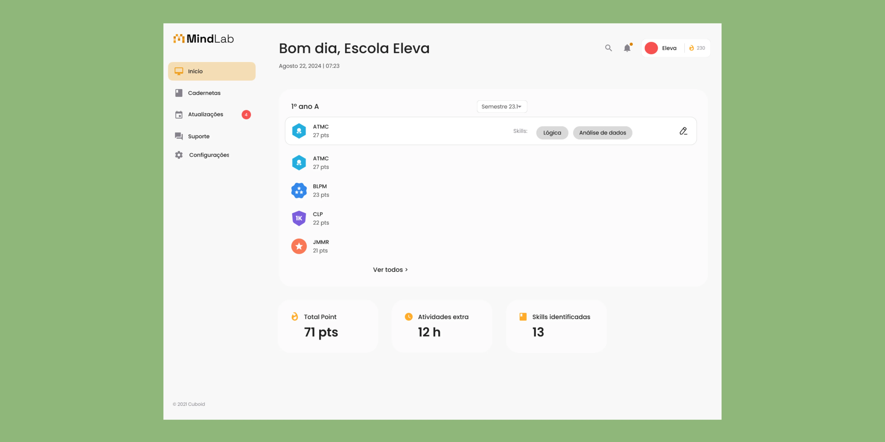